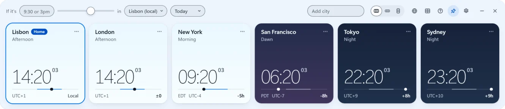
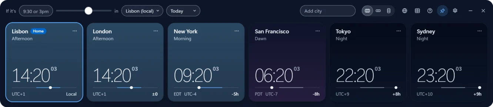

The world clock Windows should have shipped with. Completely free, open source, no strings attached.
Free for Windows 10 and 11, x64, about 90 MB. It isn’t code-signed yet, so SmartScreen may warn you the first time (what to do).
This is the real app. Try it right here.
 Open World ClockType a time, scroll a clock or open the map
Open World ClockType a time, scroll a clock or open the map
Day and night in every time zone
Real sunrise and sunset
Scroll to move time
One clock. Every time zone.
Convert a time for every city at once, find the hours your whole team shares, and keep multiple time zones on your desktop, always on top.
Find the overlap
Always on top
Copy all times
Rename cities


Light or dark
3 languages
On top, unlike Windows Clock. Offline, unlike web converters.
Nothing leaves
your PC.
Free. Open source. No telemetry.
You shouldn’t have to pay for good software like this. No ads, no account, no upsell, and every line of code is open to read. Software like it should be.
FAQ
Is it free?
Yes, completely, and open source. No ads, no sign-up, no upsell.
Does it work offline?
Yes. It runs entirely on your PC.
What data does it collect?
None. No account, no tracking. The app makes no network requests of its own.
Put the world on your desktop
- Windows 10 and 11
- x64 and ARM64
- x64, about 90 MB
- Free
It isn’t code-signed yet, so SmartScreen may warn you the first time.
All download options and SmartScreen help
iPhone widgets are in the works